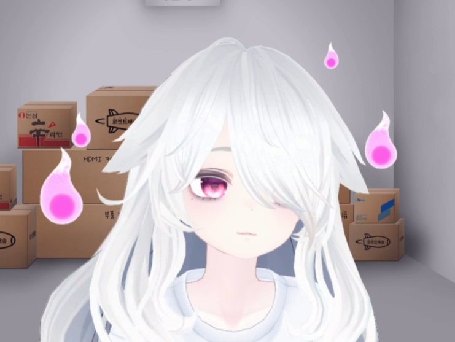
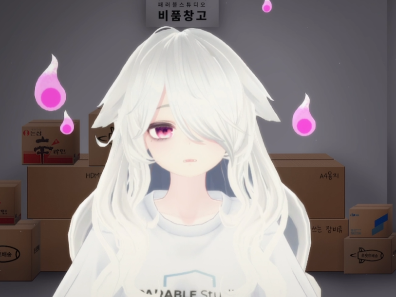
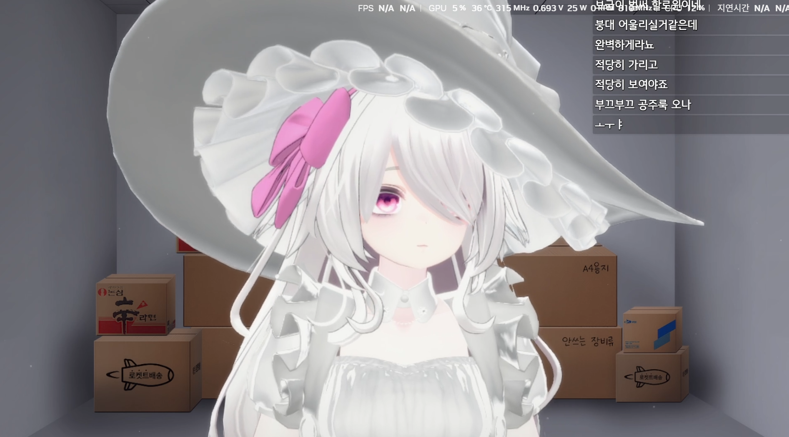
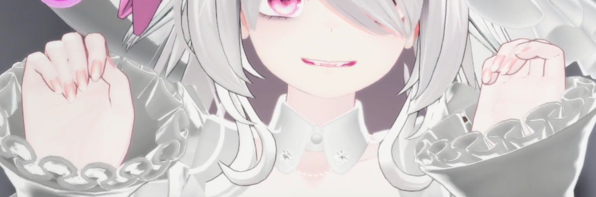
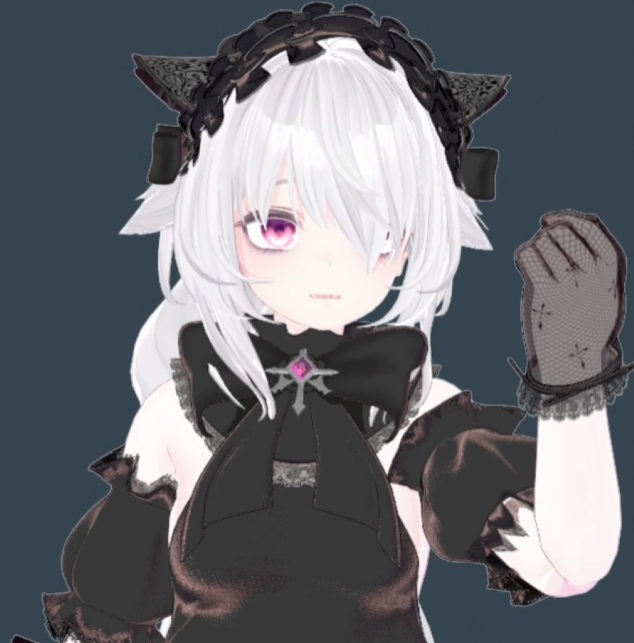
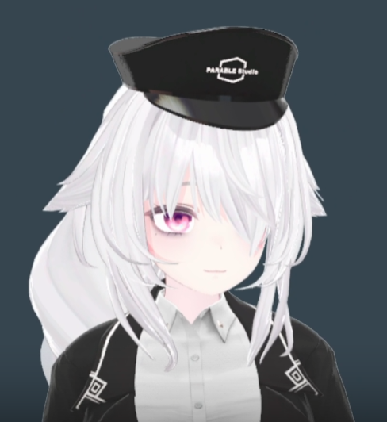
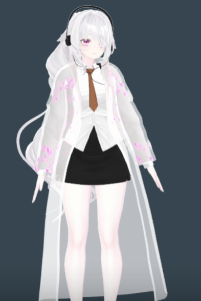
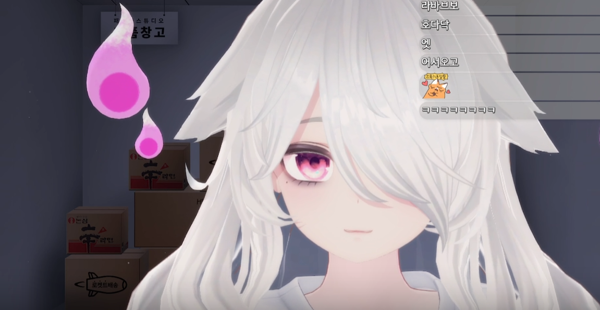
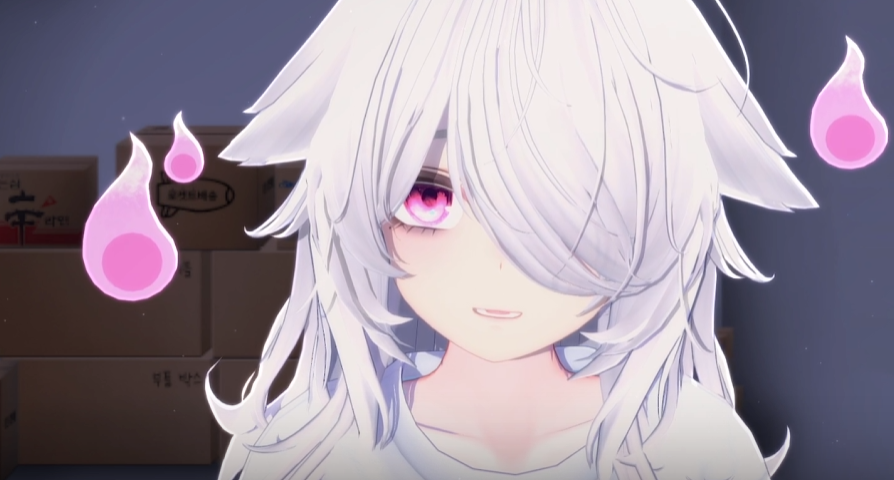

라브에게
처음엔, 밍턴을 기다리다가 봤습니다.
내가 처음 라브를 알게 된 건 사실 라브 때문이 아니었습니다.
신촌에서 밍턴 오프라인 버스킹이 있던 날,
기다리는 동안 패러블 스튜디오 채널에서 방송하고 있는 애나 보고 있으라는 식으로
우연히 켜놓게 된 방송이 시작이었어요.
내가 기억하기론 이름도 밍턴이 지어준 이름이었고,
시작부터 거창한 버튜버 데뷔라기보다는
패러블 스튜디오 직원이 홍보를 위해 방송을 켠다에 가까웠던 것 같습니다.
처음 네 번 정도의 방송은 한두 시간, 길어야 세 시간쯤.
말도 많이 어색했고 목소리도 정말 작아서
방송을 보려면 내 쪽 볼륨부터 거의 끝까지 올려야 했던 기억이 납니다.
게임도 거의 해본 적이 없어서 웬만한 게 다 첫 도전이었고,
로블록스를 유난히 좋아하는 모습까지 합쳐지니까
처음엔 정말 비품창고에서 주워온 잼민이 유령 같은 느낌이 강했어요.


그런데, 이것저것 다 해보기 시작했습니다.
처음 해보는 게임도 건드려 보고, 마왕님의 재활센터에도 참가하고,
노래 방송도 해보고, 합방도 하고, 노래자랑에도 나가고,
게임 대회도 일단 신청부터 해보고.
손컨은 영 좋지 않아서 게임을 잘하진 못했지만,
이상하게도 못하는데 계속 뭔가 해보려는 모습이 재밌었습니다.
"미안해요, 미안해요" 하면서 다 쏴 죽이던 유령.
그 장면을 보고는 정말 생각했습니다.
"어떻게 이렇게 특이한 사람이 있을 수 있지?"
그래서 그때부터는 방송을 켜면 자연스럽게 보게 됐던 것 같아요.
🎃 그리고 찾아온 할로윈 신의상
방송도 조금씩 익숙해지고, 라브에게도 하나둘 새로운 모습이 생겼습니다.
그리고 무엇보다 본인은 소매를 굉장히 마음에 들어 했습니다.


어색한데, 꾸준했고, 점점 사람이 모였습니다.
10월 6일쯤에는 첫 합방도 했던 걸로 기억하고,
이후에는 다른 방송하는 친구들도 하나둘 생기기 시작했습니다.
그 모습도 보기 좋았어요.
어색함은 생각보다 꽤 오래 갔지만 방송 자체는 정말 자주 켰습니다.
거의 매일 보다시피 했고, 하루 5시간, 6시간,
길게는 9시간 가까이 방송하던 날도 있었죠.
지금 생각하면 그 시절의 라브는
"방송을 잘하는 사람"이라기보다는 일단 뭐든 해보는 사람에 가까웠던 것 같습니다.
🖤 유령도 옷장이 생겼습니다.
처음의 흰 티 한 장에서 시작해서, 방송을 계속할수록 이런저런 의상과 모습도 늘어났습니다.



방송의 호흡이 바뀌기 시작했습니다.
2025년 2월부터는 방송 시간이 확 짧아졌고,
3월에는 그란투리스모 대회를 준비하면서 다시 길게 켰다가,
4월부터는 두 시간, 네 시간 정도의 방송이 많아졌습니다.
그리고 5월쯤부터는 방송 사이의 간격이 눈에 띄게 벌어졌죠.
길면 보름, 짧으면 며칠. 매일 켜더라도 짧게 보고 사라지는 날이 늘었습니다.

방송 일정: 점점 흐릿해짐
그리고 라브의 방송이, 라브의 방송만은 아니게 됐습니다.
1주년을 지나 패러블 스튜디오의 베이블루 아카데미가 데뷔하고,
라브가 해야 할 일이 많아지면서 방송은 자연스럽게 더 줄었습니다.
그때부터는 라브가 방송을 켰다기보다
베이블루 관련 소식을 들고 라브가 잠깐 찾아온다는 느낌이 더 강해졌던 것 같아요.
물론 개인 이야기도 하고 게임도 조금 하지만,
방송을 켜는 목적 자체가 베이블루인 날이 많아졌죠.
그리고 현재.
2026년에 들어와 지금까지 켠 방송은 약 22회.
대부분 짧게 얼굴을 비추고 사라지는 초짧뱅.
일이 바빠서 방송을 켤 시간이 없다는 걸 알고 있습니다.
그래서 여기까지는 그냥, 라브의 2년을 돌아본 이야기입니다.

그런데 숫자로 보면 이야기가 조금 달라집니다.
지금까지의 서사는 충분히 아름다웠습니다.
이제 관계 기관에서 확보한 자료를 확인하겠습니다.